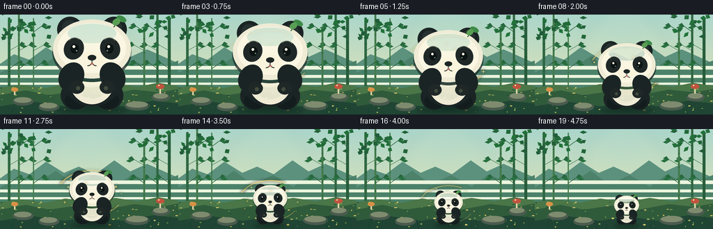
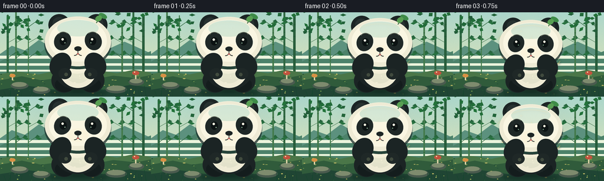

CODING AGENTS AS PIXEL WORLD MODELS
traex/GPT-5.6-Sol · instance_preservation_0046
点击播放 · 原生 RGB 像素
逐轮保存的候选
回放视频、检查图与代码变化。
每份候选均可单独播放。实际图片检查记录在下方工具轨迹中。
候选 01播放与检查图
点击播放 · 原生 RGB 像素

展开代码变化
--- 上一保存版本
+++ 本次保存版本
@@ -0,0 +1,283 @@
+from pathlib import Path
+import math
+import json
+import numpy as np
+from PIL import Image, ImageDraw, ImageFilter
+import artifact_io
+
+CASE_DIR = Path(__file__).resolve().parent
+SPEC = json.loads((CASE_DIR / "task_spec.json").read_text())
+W, H, N = SPEC["width"], SPEC["height"], SPEC["frames"]
+SS = 4
+SW, SH = W * SS, H * SS
+rng = np.random.default_rng(4619)
+
+
+def sc(v):
+ return int(round(v * SS))
+
+
+def ellipse(draw, box, fill, outline=None, width=1):
+ draw.ellipse(tuple(sc(x) for x in box), fill=fill, outline=outline, width=sc(width) if outline else 1)
+
+
+def polygon(draw, pts, fill):
+ draw.polygon([(sc(x), sc(y)) for x, y in pts], fill=fill)
+
+
+def line(draw, pts, fill, width=1, joint="curve"):
+ draw.line([(sc(x), sc(y)) for x, y in pts], fill=fill, width=max(1, sc(width)), joint=joint)
+
+
+def rounded(draw, box, radius, fill, outline=None, width=1):
+ draw.rounded_rectangle(tuple(sc(x) for x in box), radius=sc(radius), fill=fill,
+ outline=outline, width=sc(width) if outline else 1)
+
+
+def rotated_ellipse(layer, box, color, angle):
+ x0, y0, x1, y1 = box
+ pad = 6
+ ww, hh = x1-x0+2*pad, y1-y0+2*pad
+ tmp = Image.new("RGBA", (sc(ww), sc(hh)), (0, 0, 0, 0))
+ td = ImageDraw.Draw(tmp)
+ td.ellipse((sc(pad), sc(pad), sc(pad+x1-x0), sc(pad+y1-y0)), fill=color)
+ tmp = tmp.rotate(angle, Image.Resampling.BICUBIC, expand=True)
+ cx, cy = (x0+x1)/2, (y0+y1)/2
+ layer.alpha_composite(tmp, (sc(cx)-tmp.width//2, sc(cy)-tmp.height//2))
+
+
+def make_background():
+ # Layered atmospheric gradient, subtly textured.
+ yy = np.linspace(0, 1, SH)[:, None, None]
+ top = np.array([171, 214, 203], dtype=float)[None, None, :]
+ bottom = np.array([237, 231, 178], dtype=float)[None, None, :]
+ arr = top * (1-yy) + bottom * yy
+ arr = np.repeat(arr, SW, axis=1)
+ noise = rng.normal(0, 1.4, (SH, SW, 1))
+ arr = np.clip(arr + noise, 0, 255).astype(np.uint8)
+ bg = Image.fromarray(arr, "RGB").convert("RGBA")
+ d = ImageDraw.Draw(bg, "RGBA")
+
+ # Sun glow behind the subject.
+ glow = Image.new("RGBA", (SW, SH), (0, 0, 0, 0))
+ gd = ImageDraw.Draw(glow, "RGBA")
+ for r in range(62, 3, -3):
+ a = int(1.6 * (63-r)) if r > 40 else 5
+ ellipse(gd, (128-r, 55-r, 128+r, 55+r), (255, 244, 188, min(18, a)))
+ glow = glow.filter(ImageFilter.GaussianBlur(sc(10)))
+ bg = Image.alpha_composite(bg, glow)
+ d = ImageDraw.Draw(bg, "RGBA")
+
+ # Misty distant hills.
+ polygon(d, [(0,71),(20,57),(42,65),(66,47),(92,63),(113,54),(137,65),(164,45),(187,61),(211,50),(256,70),(256,103),(0,103)], (92,145,126,70))
+ polygon(d, [(0,84),(27,69),(52,79),(80,60),(107,80),(136,66),(165,83),(190,65),(221,80),(256,66),(256,108),(0,108)], (76,130,106,70))
+ # Horizontal mist bands.
+ for y, alpha, thick in [(74,44,5),(87,31,4),(98,25,3)]:
+ rounded(d, (-12,y,268,y+thick), thick/2, (236,245,221,alpha))
+
+ # Back bamboo: intentionally stable size references.
+ stalks = [
+ (13, 4, 3.4, (48,105,67,210)), (27,-9,2.4,(68,123,76,150)),
+ (226,-4,3.2,(48,103,65,210)), (243,3,4.0,(40,94,59,220)),
+ (207,17,2.3,(67,122,75,150)), (48,5,1.7,(70,127,80,110))]
+ for x, y0, wid, col in stalks:
+ rounded(d, (x-wid/2,y0,x+wid/2,121), wid/2, col)
+ for y in np.arange(y0+18, 116, 20):
+ line(d, [(x-wid/2,y),(x+wid/2,y)], (30,83,49,130), .8)
+ # branches and leaves
+ side = 1 if x < 128 else -1
+ for j, by in enumerate([25,52,78]):
+ ex = x + side*(11 + 3*(j%2)); ey=by-8
+ line(d, [(x,by),(ex,ey)], (45,99,59,150), .8)
+ for k in range(2):
+ lx=ex+side*(4+k*3); ly=ey-2+k*4
+ polygon(d, [(ex,ey),(lx,ly-3),(lx+side*5,ly),(lx,ly+2)], (40,103+10*k,63,165))
+
+ # Canopy leaves framing top.
+ leaf_specs=[]
+ for side in (0,1):
+ for k in range(22):
+ if side==0:
+ x=rng.uniform(-8,70); angle=rng.uniform(-45,55)
+ else:
+ x=rng.uniform(188,264); angle=rng.uniform(125,225)
+ y=rng.uniform(-8,34)
+ leaf_specs.append((x,y,rng.uniform(6,11),rng.uniform(2.2,4),angle))
+ for x,y,L,R,a in leaf_specs:
+ rad=math.radians(a); dx=math.cos(rad)*L; dy=math.sin(rad)*L
+ nx=-math.sin(rad)*R; ny=math.cos(rad)*R
+ col=(34,91+rng.integers(0,25),57,175+rng.integers(0,50))
+ polygon(d, [(x,y),(x+dx*.48+nx,y+dy*.48+ny),(x+dx,y+dy),(x+dx*.48-nx,y+dy*.48-ny)], col)
+
+ # Ground, moss bank and pond-like foreground highlights.
+ polygon(d, [(0,105),(30,101),(65,106),(94,100),(131,105),(165,99),(198,104),(227,98),(256,103),(256,144),(0,144)], (74,118,72,255))
+ polygon(d, [(0,116),(37,109),(70,116),(111,110),(150,116),(192,108),(230,112),(256,107),(256,144),(0,144)], (48,91,59,255))
+ polygon(d, [(0,132),(45,125),(93,132),(134,126),(176,132),(220,124),(256,128),(256,144),(0,144)], (32,69,52,255))
+ # soft moss patches
+ for _ in range(75):
+ x=rng.uniform(0,256); y=rng.uniform(105,143)
+ rx=rng.uniform(.4,2.4); ry=rng.uniform(.3,1.0)
+ col=rng.choice([(111,150,78,120),(151,170,87,90),(36,80,53,150),(206,194,105,65)])
+ ellipse(d,(x-rx,y-ry,x+rx,y+ry),tuple(int(c) for c in col))
+
+ # Fixed stepping stones and small mushrooms, explicit scale cues.
+ for box in [(18,119,48,131),(55,127,85,139),(179,125,215,138),(218,113,244,125)]:
+ ellipse(d, box, (74,91,78,255))
+ ellipse(d, (box[0]+2,box[1],box[2]-3,box[3]-4), (126,139,110,220))
+ # mushrooms
+ rounded(d,(229,104,231,114),1,(226,215,170,255))
+ ellipse(d,(224,100,236,107),(193,83,62,255))
+ ellipse(d,(227,101,229,103),(244,221,170,230))
+ rounded(d,(20,108,22,116),1,(225,213,171,255))
+ ellipse(d,(16,105,26,111),(216,145,69,255))
+
+ # Grasses along lower edges, keep center clear for silhouette.
+ for side in (range(0,53), range(203,256)):
+ for x in side:
+ if rng.random()<0.17:
+ h=rng.uniform(5,19); bend=rng.uniform(-5,5)
+ line(d,[(x,144),(x+bend,144-h)],(22,69,46,210),rng.uniform(.4,1.0))
+ return bg
+
+
+def make_panda_master():
+ # Canonical panda drawing, reused pixel-for-pixel at every size.
+ S = SS
+ im = Image.new("RGBA", (140*S, 145*S), (0,0,0,0))
+ d = ImageDraw.Draw(im, "RGBA")
+ # Soft form shadow behind body.
+ sh = Image.new("RGBA", im.size, (0,0,0,0)); sd=ImageDraw.Draw(sh,"RGBA")
+ sd.ellipse((sc(28),sc(69),sc(112),sc(142)), fill=(5,18,18,90))
+ sh=sh.filter(ImageFilter.GaussianBlur(sc(3)))
+ im=Image.alpha_composite(im,sh); d=ImageDraw.Draw(im,"RGBA")
+
+ black=(27,36,36,255); black_hi=(39,49,48,255)
+ white=(239,235,213,255); cream=(250,246,226,255)
+ # Ears behind the head, with subtle highlights.
+ ellipse(d,(20,10,57,47),black)
+ ellipse(d,(83,10,120,47),black)
+ ellipse(d,(27,15,49,37),black_hi)
+ ellipse(d,(91,15,113,37),black_hi)
+ # Lower legs behind body.
+ rotated_ellipse(im,(25,102,68,144),black,13)
+ rotated_ellipse(im,(72,102,115,144),black,-13)
+ d=ImageDraw.Draw(im,"RGBA")
+ ellipse(d,(31,118,64,143),(20,29,29,255))
+ ellipse(d,(76,118,109,143),(20,29,29,255))
+ # Main pear-shaped white body.
+ ellipse(d,(28,65,112,139),black)
+ ellipse(d,(38,70,102,136),white)
+ # warm belly highlight
+ ellipse(d,(47,83,93,128),(247,242,219,230))
+ # Head shadow then face.
+ ellipse(d,(13,18,127,104),(14,28,28,75))
+ ellipse(d,(14,14,126,99),white)
+ ellipse(d,(21,19,119,91),cream)
+ # Face highlight.
+ ellipse(d,(35,20,105,48),(255,252,237,100))
+ # Eye patches (rotated layers).
+ rotated_ellipse(im,(30,40,58,72),(31,40,39,255),-26)
+ rotated_ellipse(im,(82,40,110,72),(31,40,39,255),26)
+ d=ImageDraw.Draw(im,"RGBA")
+ # Eyes and catches.
+ ellipse(d,(39,49,51,63),(12,19,19,255)); ellipse(d,(89,49,101,63),(12,19,19,255))
+ ellipse(d,(42,51,46,55),(250,248,226,255)); ellipse(d,(92,51,96,55),(250,248,226,255))
+ ellipse(d,(47,58,49,60),(110,145,121,180)); ellipse(d,(91,58,93,60),(110,145,121,180))
+ # Muzzle and friendly expression.
+ ellipse(d,(52,61,88,84),(251,244,220,255))
+ ellipse(d,(64,65,76,73),(29,37,36,255))
+ polygon(d,[(64,67),(70,73),(76,67)],(29,37,36,255))
+ line(d,[(70,72),(70,76)],(47,49,43,255),1.2)
+ # smiling mouth curves via arcs
+ d.arc((sc(59),sc(69),sc(70),sc(81)), 15, 100, fill=(47,49,43,255), width=sc(1.2))
+ d.arc((sc(70),sc(69),sc(81),sc(81)), 80, 165, fill=(47,49,43,255), width=sc(1.2))
+ ellipse(d,(68,77,72,79),(214,105,99,210))
+ # Brows, distinctive and persistent.
+ d.arc((sc(37),sc(40),sc(53),sc(51)),190,335,fill=(75,74,61,190),width=sc(1))
+ d.arc((sc(87),sc(40),sc(103),sc(51)),205,350,fill=(75,74,61,190),width=sc(1))
+
+ # Arms across belly.
+ rotated_ellipse(im,(23,75,58,118),black,-28)
+ rotated_ellipse(im,(82,75,117,118),black,28)
+ d=ImageDraw.Draw(im,"RGBA")
+ ellipse(d,(37,102,59,121),(31,40,39,255)); ellipse(d,(81,102,103,121),(31,40,39,255))
+ # Paw pad hints.
+ ellipse(d,(47,110,53,116),(64,68,60,220)); ellipse(d,(87,110,93,116),(64,68,60,220))
+
+ # Same tiny green leaf tucked by right ear: identity cue.
+ line(d,[(101,25),(110,14)],(48,104,61,255),1.5)
+ rotated_ellipse(im,(105,9,120,17),(62,139,72,255),-28)
+ rotated_ellipse(im,(99,13,111,22),(89,159,83,255),35)
+ return im
+
+
+def draw_magic(base, progress, cx, top, scale):
+ # Restrained golden shrinking spiral, strongest only during the change.
+ strength = math.sin(math.pi * progress) ** 1.15
+ if strength < .03:
+ return base
+ aura=Image.new("RGBA",base.size,(0,0,0,0)); ad=ImageDraw.Draw(aura,"RGBA")
+ center_y = top + 68*scale
+ radius = 67 - 29*progress
+ # partial rings imply contraction without dominating the panda.
+ for off, start in [(0,205),(5,30)]:
+ r=(radius-off)
+ box=(sc(cx-r),sc(center_y-r*.68),sc(cx+r),sc(center_y+r*.68))
+ ad.arc(box,start,start+92,fill=(255,222,115,int(118*strength)),width=sc(1.3))
+ for k in range(16):
+ theta=2*math.pi*k/16 + progress*2.7
+ rr=radius*(.68+.23*math.sin(k*2.1+progress*4))
+ x=cx+math.cos(theta)*rr
+ y=center_y+math.sin(theta)*rr*.72
+ r=(.65 + (k%4)*.22)*(0.75+0.25*strength)
+ a=int((105+10*(k%4))*strength)
+ ellipse(ad,(x-r,y-r,x+r,y+r),(255,224,117,a))
+ if k%5==0:
+ line(ad,[(x-2.4*r,y),(x+2.4*r,y)],(255,243,183,a),.55)
+ line(ad,[(x,y-2.4*r),(x,y+2.4*r)],(255,243,183,a),.55)
+ bloom=aura.filter(ImageFilter.GaussianBlur(sc(2.2)))
+ base=Image.alpha_composite(base,bloom)
+ base=Image.alpha_composite(base,aura)
+ return base
+
+
+background=make_background()
+panda=make_panda_master()
+frames=[]
+for i in range(N):
+ u=i/(N-1)
+ # Smooth monotonic transformation, with readable holds at the endpoints.
+ eased=u*u*(3-2*u)
+ scale=1.0-0.68*eased
+ frame=background.copy()
+ cx=132.0
+ ground=138.0
+ target_w=max(1,int(round(panda.width*scale)))
+ target_h=max(1,int(round(panda.height*scale)))
+ # Ground contact is invariant: the same panda gets smaller in the same world.
+ px=int(round(sc(cx)-target_w/2))
+ py=int(round(sc(ground)-target_h))
+ top=py/SS
+
+ # Contact shadow shrinks along with the panda but stays fixed on the ground.
+ shadow=Image.new("RGBA",(SW,SH),(0,0,0,0)); sd=ImageDraw.Draw(shadow,"RGBA")
+ halfw=47*scale+3
+ sd.ellipse((sc(cx-halfw),sc(ground-4*scale),sc(cx+halfw),sc(ground+3)),fill=(9,35,30,int(110+35*(1-scale))))
+ shadow=shadow.filter(ImageFilter.GaussianBlur(sc(2.8)))
+ frame=Image.alpha_composite(frame,shadow)
+ frame=draw_magic(frame,u,cx,top,scale)
+
+ resized=panda.resize((target_w,target_h),Image.Resampling.LANCZOS)
+ frame.alpha_composite(resized,(px,py))
+
+ # A few foreground blades cross the feet, integrating the character into scene.
+ fg=Image.new("RGBA",(SW,SH),(0,0,0,0)); fd=ImageDraw.Draw(fg,"RGBA")
+ for x,h,bend in [(89,10,-2),(102,6,2),(165,8,1),(174,12,-3)]:
+ line(fd,[(x,144),(x+bend,144-h)],(18,61,43,210),.7)
+ frame=Image.alpha_composite(frame,fg)
+ frame=frame.convert("RGB").resize((W,H),Image.Resampling.LANCZOS)
+ frames.append(np.asarray(frame,dtype=np.uint8))
+
+frames=np.stack(frames)
+artifact_io.save(frames, CASE_DIR)
+print(f"saved {frames.shape} RGB frames; panda scale {1.0:.2f} -> {0.32:.2f}")
可观测工具轨迹
实际执行的命令与返回图片。
命令 1exit 0
/bin/bash -lc "cat prompt.txt && printf '\\n--- GENERATION_RULES ---\\n' && cat GENERATION_RULES.md && printf '\\n--- TASK_SPEC ---\\n' && cat task_spec.json"
命令 2exit 0
/bin/bash -lc "find . -maxdepth 3 -type f -printf '%p\\n' | sort | sed -n '1,240p'"
命令 3exit 0
/bin/bash -lc "sed -n '1,260p' artifact_io.py"
命令 4exit 0
/bin/bash -lc "cat > generate.py <<'PY'
from pathlib import Path
import math
import json
import numpy as np
from PIL import Image, ImageDraw, ImageFilter
import artifact_io
CASE_DIR = Path(__file__).resolve().parent
SPEC = json.loads((CASE_DIR / \"task_spec.json\").read_text())
W, H, N = SPEC[\"width\"], SPEC[\"height\"], SPEC[\"frames\"]
SS = 4
SW, SH = W * SS, H * SS
rng = np.random.default_rng(4619)
def sc(v):
return int(round(v * SS))
def ellipse(draw, box, fill, outline=None, width=1):
draw.ellipse(tuple(sc(x) for x in box), fill=fill, outline=outline, width=sc(width) if outline else 1)
def polygon(draw, pts, fill):
draw.polygon([(sc(x), sc(y)) for x, y in pts], fill=fill)
def line(draw, pts, fill, width=1, joint=\"curve\"):
draw.line([(sc(x), sc(y)) for x, y in pts], fill=fill, width=max(1, sc(width)), joint=joint)
def rounded(draw, box, radius, fill, outline=None, width=1):
draw.rounded_rectangle(tuple(sc(x) for x in box), radius=sc(radius), fill=fill,
outline=outline, width=sc(width) if outline else 1)
def rotated_ellipse(layer, box, color, angle):
x0, y0, x1, y1 = box
pad = 6
ww, hh = x1-x0+2*pad, y1-y0+2*pad
tmp = Image.new(\"RGBA\", (sc(ww), sc(hh)), (0, 0, 0, 0))
td = ImageDraw.Draw(tmp)
td.ellipse((sc(pad), sc(pad), sc(pad+x1-x0), sc(pad+y1-y0)), fill=color)
tmp = tmp.rotate(angle, Image.Resampling.BICUBIC, expand=True)
cx, cy = (x0+x1)/2, (y0+y1)/2
layer.alpha_composite(tmp, (sc(cx)-tmp.width//2, sc(cy)-tmp.height//2))
def make_background():
# Layered atmospheric gradient, subtly textured.
yy = np.linspace(0, 1, SH)[:, None, None]
top = np.array([171, 214, 203], dtype=float)[None, None, :]
bottom = np.array([237, 231, 178], dtype=float)[None, None, :]
arr = top * (1-yy) + bottom * yy
arr = np.repeat(arr, SW, axis=1)
noise = rng.normal(0, 1.4, (SH, SW, 1))
arr = np.clip(arr + noise, 0, 255).astype(np.uint8)
bg = Image.fromarray(arr, \"RGB\").convert(\"RGBA\")
d = ImageDraw.Draw(bg, \"RGBA\")
# Sun glow behind the subject.
glow = Image.new(\"RGBA\", (SW, SH), (0, 0, 0, 0))
gd = ImageDraw.Draw(glow, \"RGBA\")
for r in range(62, 3, -3):
a = int(1.6 * (63-r)) if r > 40 else 5
ellipse(gd, (128-r, 55-r, 128+r, 55+r), (255, 244, 188, min(18, a)))
glow = glow.filter(ImageFilter.GaussianBlur(sc(10)))
bg = Image.alpha_composite(bg, glow)
d = ImageDraw.Draw(bg, \"RGBA\")
# Misty distant hills.
polygon(d, [(0,71),(20,57),(42,65),(66,47),(92,63),(113,54),(137,65),(164,45),(187,61),(211,50),(256,70),(256,103),(0,103)], (92,145,126,70))
polygon(d, [(0,84),(27,69),(52,79),(80,60),(107,80),(136,66),(165,83),(190,65),(221,80),(256,66),(256,108),(0,108)], (76,130,106,70))
# Horizontal mist bands.
for y, alpha, thick in [(74,44,5),(87,31,4),(98,25,3)]:
rounded(d, (-12,y,268,y+thick), thick/2, (236,245,221,alpha))
# Back bamboo: intentionally stable size references.
stalks = [
(13, 4, 3.4, (48,105,67,210)), (27,-9,2.4,(68,123,76,150)),
(226,-4,3.2,(48,103,65,210)), (243,3,4.0,(40,94,59,220)),
(207,17,2.3,(67,122,75,150)), (48,5,1.7,(70,127,80,110))]
for x, y0, wid, col in stalks:
rounded(d, (x-wid/2,y0,x+wid/2,121), wid/2, col)
for y in np.arange(y0+18, 116, 20):
line(d, [(x-wid/2,y),(x+wid/2,y)], (30,83,49,130), .8)
# branches and leaves
side = 1 if x < 128 else -1
for j, by in enumerate([25,52,78]):
ex = x + side*(11 + 3*(j%2)); ey=by-8
line(d, [(x,by),(ex,ey)], (45,99,59,150), .8)
for k in range(2):
lx=ex+side*(4+k*3); ly=ey-2+k*4
polygon(d, [(ex,ey),(lx,ly-3),(lx+side*5,ly),(lx,ly+2)], (40,103+10*k,63,165))
# Canopy leaves framing top.
leaf_specs=[]
for side in (0,1):
for k in range(22):
if side==0:
x=rng.uniform(-8,70); angle=rng.uniform(-45,55)
else:
x=rng.uniform(188,264); angle=rng.uniform(125,225)
y=rng.uniform(-8,34)
leaf_specs.append((x,y,rng.uniform(6,11),rng.uniform(2.2,4),angle))
for x,y,L,R,a in leaf_specs:
rad=math.radians(a); dx=math.cos(rad)*L; dy=math.sin(rad)*L
nx=-math.sin(rad)*R; ny=math.cos(rad)*R
col=(34,91+rng.integers(0,25),57,175+rng.integers(0,50))
polygon(d, [(x,y),(x+dx*.48+nx,y+dy*.48+ny),(x+dx,y+dy),(x+dx*.48-nx,y+dy*.48-ny)], col)
# Ground, moss bank and pond-like foreground highlights.
polygon(d, [(0,105),(30,101),(65,106),(94,100),(131,105),(165,99),(198,104),(227,98),(256,103),(256,144),(0,144)], (74,118,72,255))
polygon(d, [(0,116),(37,109),(70,116),(111,110),(150,116),(192,108),(230,112),(256,107),(256,144),(0,144)], (48,91,59,255))
polygon(d, [(0,132),(45,125),(93,132),(134,126),(176,132),(220,124),(256,128),(256,144),(0,144)], (32,69,52,255))
# soft moss patches
for _ in range(75):
x=rng.uniform(0,256); y=rng.uniform(105,143)
rx=rng.uniform(.4,2.4); ry=rng.uniform(.3,1.0)
col=rng.choice([(111,150,78,120),(151,170,87,90),(36,80,53,150),(206,194,105,65)])
ellipse(d,(x-rx,y-ry,x+rx,y+ry),tuple(int(c) for c in col))
# Fixed stepping stones and small mushrooms, explicit scale cues.
for box in [(18,119,48,131),(55,127,85,139),(179,125,215,138),(218,113,244,125)]:
ellipse(d, box, (74,91,78,255))
ellipse(d, (box[0]+2,box[1],box[2]-3,box[3]-4), (126,139,110,220))
# mushrooms
rounded(d,(229,104,231,114),1,(226,215,170,255))
ellipse(d,(224,100,236,107),(193,83,62,255))
ellipse(d,(227,101,229,103),(244,221,170,230))
rounded(d,(20,108,22,116),1,(225,213,171,255))
ellipse(d,(16,105,26,111),(216,145,69,255))
# Grasses along lower edges, keep center clear for silhouette.
for side in (range(0,53), range(203,256)):
for x in side:
if rng.random()<0.17:
h=rng.uniform(5,19); bend=rng.uniform(-5,5)
line(d,[(x,144),(x+bend,144-h)],(22,69,46,210),rng.uniform(.4,1.0))
return bg
def make_panda_master():
# Canonical panda drawing, reused pixel-for-pixel at every size.
S = SS
im = Image.new(\"RGBA\", (140*S, 145*S), (0,0,0,0))
d = ImageDraw.Draw(im, \"RGBA\")
# Soft form shadow behind body.
sh = Image.new(\"RGBA\", im.size, (0,0,0,0)); sd=ImageDraw.Draw(sh,\"RGBA\")
sd.ellipse((sc(28),sc(69),sc(112),sc(142)), fill=(5,18,18,90))
sh=sh.filter(ImageFilter.GaussianBlur(sc(3)))
im=Image.alpha_composite(im,sh); d=ImageDraw.Draw(im,\"RGBA\")
black=(27,36,36,255); black_hi=(39,49,48,255)
white=(239,235,213,255); cream=(250,246,226,255)
# Ears behind the head, with subtle highlights.
ellipse(d,(20,10,57,47),black)
ellipse(d,(83,10,120,47),black)
ellipse(d,(27,15,49,37),black_hi)
ellipse(d,(91,15,113,37),black_hi)
# Lower legs behind body.
rotated_ellipse(im,(25,102,68,144),black,13)
rotated_ellipse(im,(72,102,115,144),black,-13)
d=ImageDraw.Draw(im,\"RGBA\")
ellipse(d,(31,118,64,143),(20,29,29,255))
ellipse(d,(76,118,109,143),(20,29,29,255))
# Main pear-shaped white body.
ellipse(d,(28,65,112,139),black)
ellipse(d,(38,70,102,136),white)
# warm belly highlight
ellipse(d,(47,83,93,128),(247,242,219,230))
# Head shadow then face.
ellipse(d,(13,18,127,104),(14,28,28,75))
ellipse(d,(14,14,126,99),white)
ellipse(d,(21,19,119,91),cream)
# Face highlight.
ellipse(d,(35,20,105,48),(255,252,237,100))
# Eye patches (rotated layers).
rotated_ellipse(im,(30,40,58,72),(31,40,39,255),-26)
rotated_ellipse(im,(82,40,110,72),(31,40,39,255),26)
d=ImageDraw.Draw(im,\"RGBA\")
# Eyes and catches.
ellipse(d,(39,49,51,63),(12,19,19,255)); ellipse(d,(89,49,101,63),(12,19,19,255))
ellipse(d,(42,51,46,55),(250,248,226,255)); ellipse(d,(92,51,96,55),(250,248,226,255))
ellipse(d,(47,58,49,60),(110,145,121,180)); ellipse(d,(91,58,93,60),(110,145,121,180))
# Muzzle and friendly expression.
ellipse(d,(52,61,88,84),(251,244,220,255))
ellipse(d,(64,65,76,73),(29,37,36,255))
polygon(d,[(64,67),(70,73),(76,67)],(29,37,36,255))
line(d,[(70,72),(70,76)],(47,49,43,255),1.2)
# smiling mouth curves via arcs
d.arc((sc(59),sc(69),sc(70),sc(81)), 15, 100, fill=(47,49,43,255), width=sc(1.2))
d.arc((sc(70),sc(69),sc(81),sc(81)), 80, 165, fill=(47,49,43,255), width=sc(1.2))
ellipse(d,(68,77,72,79),(214,105,99,210))
# Brows, distinctive and persistent.
d.arc((sc(37),sc(40),sc(53),sc(51)),190,335,fill=(75,74,61,190),width=sc(1))
d.arc((sc(87),sc(40),sc(103),sc(51)),205,350,fill=(75,74,61,190),width=sc(1))
# Arms across belly.
rotated_ellipse(im,(23,75,58,118),black,-28)
rotated_ellipse(im,(82,75,117,118),black,28)
d=ImageDraw.Draw(im,\"RGBA\")
ellipse(d,(37,102,59,121),(31,40,39,255)); ellipse(d,(81,102,103,121),(31,40,39,255))
# Paw pad hints.
ellipse(d,(47,110,53,116),(64,68,60,220)); ellipse(d,(87,110,93,116),(64,68,60,220))
# Same tiny green leaf tucked by right ear: identity cue.
line(d,[(101,25),(110,14)],(48,104,61,255),1.5)
rotated_ellipse(im,(105,9,120,17),(62,139,72,255),-28)
rotated_ellipse(im,(99,13,111,22),(89,159,83,255),35)
return im
def draw_magic(base, progress, cx, top, scale):
# Restrained golden shrinking spiral, strongest only during the change.
strength = math.sin(math.pi * progress) ** 1.15
if strength < .03:
return base
aura=Image.new(\"RGBA\",base.size,(0,0,0,0)); ad=ImageDraw.Draw(aura,\"RGBA\")
center_y = top + 68*scale
radius = 67 - 29*progress
# partial rings imply contraction without dominating the panda.
for off, start in [(0,205),(5,30)]:
r=(radius-off)
box=(sc(cx-r),sc(center_y-r*.68),sc(cx+r),sc(center_y+r*.68))
ad.arc(box,start,start+92,fill=(255,222,115,int(118*strength)),width=sc(1.3))
for k in range(16):
theta=2*math.pi*k/16 + progress*2.7
rr=radius*(.68+.23*math.sin(k*2.1+progress*4))
x=cx+math.cos(theta)*rr
y=center_y+math.sin(theta)*rr*.72
r=(.65 + (k%4)*.22)*(0.75+0.25*strength)
a=int((105+10*(k%4))*strength)
ellipse(ad,(x-r,y-r,x+r,y+r),(255,224,117,a))
if k%5==0:
line(ad,[(x-2.4*r,y),(x+2.4*r,y)],(255,243,183,a),.55)
line(ad,[(x,y-2.4*r),(x,y+2.4*r)],(255,243,183,a),.55)
bloom=aura.filter(ImageFilter.GaussianBlur(sc(2.2)))
base=Image.alpha_composite(base,bloom)
base=Image.alpha_composite(base,aura)
return base
background=make_background()
panda=make_panda_master()
frames=[]
for i in range(N):
u=i/(N-1)
# Smooth monotonic transformation, with readable holds at the endpoints.
eased=u*u*(3-2*u)
scale=1.0-0.68*eased
frame=background.copy()
cx=132.0
ground=138.0
target_w=max(1,int(round(panda.width*scale)))
target_h=max(1,int(round(panda.height*scale)))
# Ground contact is invariant: the same panda gets smaller in the same world.
px=int(round(sc(cx)-target_w/2))
py=int(round(sc(ground)-target_h))
top=py/SS
# Contact shadow shrinks along with the panda but stays fixed on the ground.
shadow=Image.new(\"RGBA\",(SW,SH),(0,0,0,0)); sd=ImageDraw.Draw(shadow,\"RGBA\")
halfw=47*scale+3
sd.ellipse((sc(cx-halfw),sc(ground-4*scale),sc(cx+halfw),sc(ground+3)),fill=(9,35,30,int(110+35*(1-scale))))
shadow=shadow.filter(ImageFilter.GaussianBlur(sc(2.8)))
frame=Image.alpha_composite(frame,shadow)
frame=draw_magic(frame,u,cx,top,scale)
resized=panda.resize((target_w,target_h),Image.Resampling.LANCZOS)
frame.alpha_composite(resized,(px,py))
# A few foreground blades cross the feet, integrating the character into scene.
fg=Image.new(\"RGBA\",(SW,SH),(0,0,0,0)); fd=ImageDraw.Draw(fg,\"RGBA\")
for x,h,bend in [(89,10,-2),(102,6,2),(165,8,1),(174,12,-3)]:
line(fd,[(x,144),(x+bend,144-h)],(18,61,43,210),.7)
frame=Image.alpha_composite(frame,fg)
frame=frame.convert(\"RGB\").resize((W,H),Image.Resampling.LANCZOS)
frames.append(np.asarray(frame,dtype=np.uint8))
frames=np.stack(frames)
artifact_io.save(frames, CASE_DIR)
print(f\"saved {frames.shape} RGB frames; panda scale {1.0:.2f} -> {0.32:.2f}\")
PY
python generate.py
ls -lh pixels.npz inspection.png index.html frames/00.png frames/19.png"命令 5exit 0
/bin/bash -lc "python - <<'PY'
import numpy as np, json
from pathlib import Path
from PIL import Image
p=Path('.')
spec=json.loads((p/'task_spec.json').read_text())
z=np.load(p/'pixels.npz')['pixels']
print('pixels', z.shape, z.dtype)
assert z.shape==(spec['height'],spec['width'],spec['frames'])
assert len(list((p/'frames').glob('*.png')))==spec['frames']
for i in range(spec['frames']):
im=Image.open(p/'frames'/f'{i:02d}.png')
assert im.mode=='RGB' and im.size==(spec['width'],spec['height'])
print('20/20 RGB frames valid; index', (p/'index.html').stat().st_size, 'bytes')
# Framewise delta verifies animation and smoothness
f=np.stack([np.asarray(Image.open(p/'frames'/f'{i:02d}.png')).astype(float) for i in range(20)])
d=np.mean(np.abs(np.diff(f,axis=0)),axis=(1,2,3))
print('mean adjacent RGB deltas:', np.round(d,2).tolist())
PY"视觉工具实际返回图片 1

视觉工具实际返回图片 2

保存候选 1 份；完成命令 5 次；可验证图片返回 2 张。原始 API 响应与完整日志保留在本地。